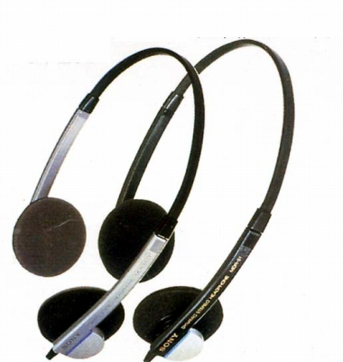
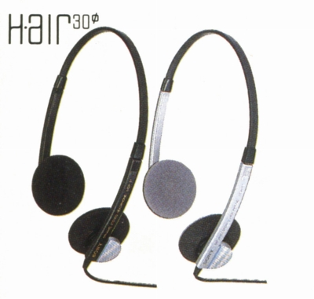
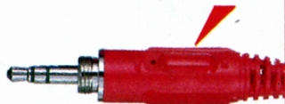

MDR-51


■価格 4,200円■型式 オープンエアダイナミック型■振動板 30�oドーム型■インピーダンス 45Ω■再生周波数帯域 16-24,000Hz■許容入力 100mW■感度 103ｄB/mW■コード 2ｍ OFC線ステレオマルチ2ウェイプラグ■重量 45g（コード含まず）■発売 1985年3月■販売終了 1989年頃■備考

（ステレオ/モノ切替機能付きのマルチプラグ）
ソニーのインデックスへ